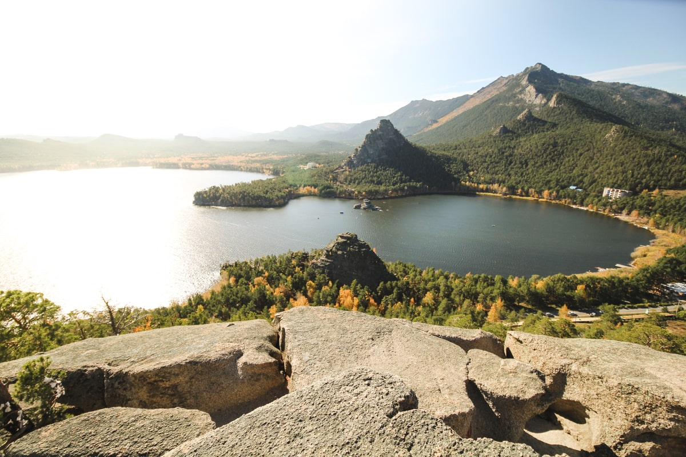

The main attraction of Kokshetau is the State National Nature Park Burabai. And its decoration is 14 excellent lakes among picturesque mountains covered with dense coniferous forests. Lake Borovoye is considered the most significant among them in terms of size, beauty and love of tourists. Borovoye is a resort of national importance, which is under the jurisdiction of the Office of the President of the Republic of Kazakhstan. The lake is located 70 km from the city. Numerous hotels, sanatoriums and rest homes have been built on the shores of the lake. The mild mountain climate, clean air and the presence of healing mud make the rest here not only pleasant, but also therapeutic.

The Akmola Regional Museum of Local Lore works in Kokshetau. Its activities are aimed at demonstrating exhibits that vividly express the peculiarities of the nature and history of the region, the way of life and traditions of the peoples inhabiting the region.
The museum building, built in 1904, is a monument of architecture and history.
"The Kokshetau Museum Association unites museums located on the territory of the city: the M. Gabdullin Museum, the Museum of the history of the city, the Museum of Literature and Art.
In addition, there are 6 departmental museums, palaces and houses of culture, the city Philharmonic, libraries, clubs, cinemas in Kokshetau.
There are two theaters: the Kokshetau Russian Drama Theater and the Kazakh Musical Drama Theater named after Sh.Kusainov.